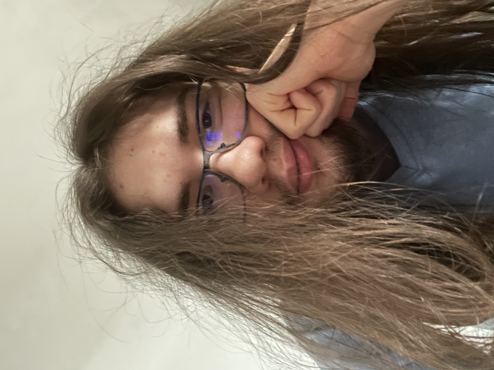

A little about me...
My name is Stefan-Felician, I come from Romania and I'm 20 years old. I'm quite shy at first but after you get to know me you'll think the opposite. I have lots of things I'm passionate about and a handful of hobbies.
-
Passions/hobbies:
- Ancient civilizations/mythology
- Gaming
- The Nasuverse
- Reading
- Mysteries And whatever gets me to talk lots about when mentioned
-
Skills:
- Computer literacy with usage of Windows 365
- Basic knowledge of programming languages(HTML, CSS, Java, Python, C++, Oracle etc.)
- Very little knowledge of Photoshop
- Basic knowledge of Windows Video Editor
- Problem solving
- Leadership